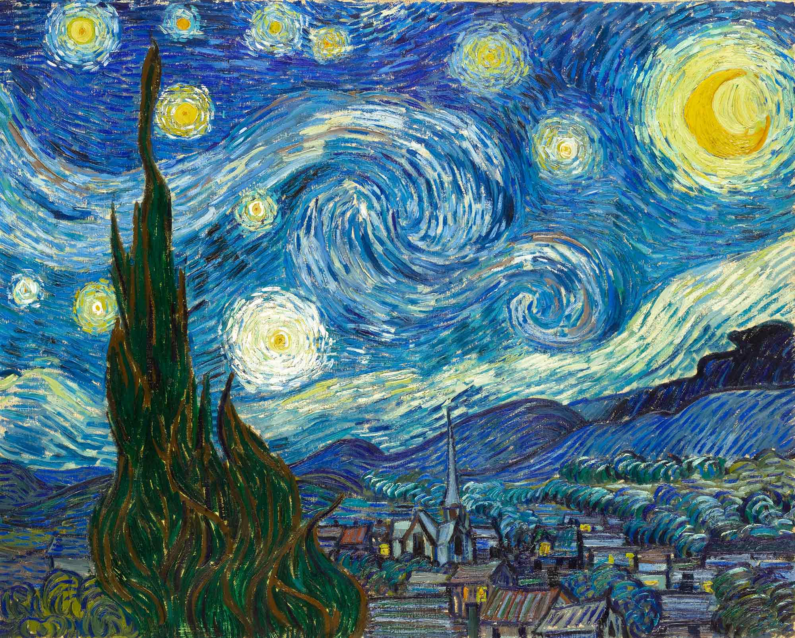
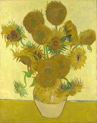
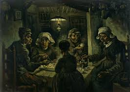
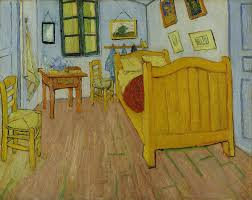
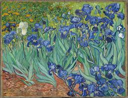

Ünlü Eserleri

Yıldızlı Gece
Van Gogh'un en ünlü eseri olan bu tablo, gece gökyüzünün bir yorumudur.
1889

Ayçiçekleri
Sarı rengin hakimiyetindeki bu seri, Van Gogh'un renk kullanımındaki ustalığını gösterir.
1888

Patates Yiyenler
Köylü yaşamını betimleyen bu tablo, Van Gogh'un erken dönem başyapıtlarından biridir.
1885
Otoportre
Van Gogh 37 otoportre yapmıştır. Bu çalışmalar onun iç dünyasını yansıtır.
1889

Yatak Odası
Arles'teki yatak odasını betimleyen bu tablo.
1888

İris Çiçekleri
Sanatoryumda çizilen bu tablo, sanatçının doğa sevgisini yansıtır.
1889